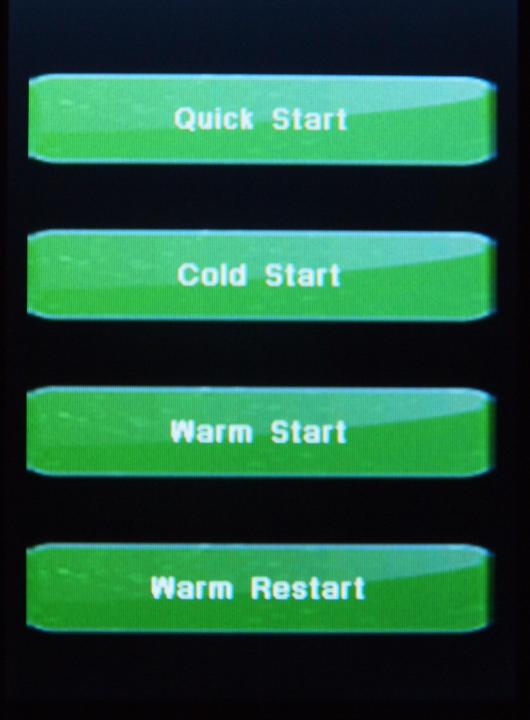

|
Gemini-2 and Gemini-1 Telescope Mount Controllers Website and Tutorials |
| Quick Start Tutorial - click on green buttons to Navigate |
|
Since this is your first time powering up your
mount. Please click the
QUICK START after reading this page. All the other buttons on this screen work and the description of what they do
is shown. However, for this Tutorial use your mouse to select
QUICK START.
 |
Quick Start - This selection will take you to
menu's to select your "Mount Type", Enter your "Location", then "Time,
Time Zone and Date" Then you will go to the "Main Screen" This also does
a "Cold Start". Cold Start - A cold start wipes out all stored modeling. You need to have your mount positioned at want is called CWD. This is with the counter weights down, and the Declination pointed towards Polaris in the Northern Hemisphere, and the South Celestial Pole in the Southern Hemisphere. Warm Start - This is basically the same as a cold start, but does not wipe out any models build. It also remembers all your setting. You still must start with the mount pointed to CWD position as in a cold start. If you have models build, but have moved your Right Ascension axis or Declination axis, but not the location of the mount itself, then you can use this startup mode. Warm Restart - This mode also remembers your modeling and all setting. You can only use this mode if, and only if you have not moved both the Right Ascension axis or Declination axis and also have not moved the mount in position. This is the same screen that the Interactive Hand Controller Tutorial starts with. If you would like to do that Tutorial you can hit the link above in this paragraph. |